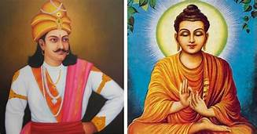

Samantabhadra means "Universaly Worthy" is a bodhisattva in Mahayana Buddhism associated with practice and meditation. Together with Gautama Buddha and his fellow bodhisattva Mañjuśrī, he forms the Shakyamuni trinity in Buddhism.

Ashoka, also known as Ashoka the Great, Piodasses in ancient Greece, was an Indian emperor of the Maurya Dynasty son of Bindusara Maurya, who ruled almost all of the Indian subcontinent from c. 268 to 232 BCE.[6][7], Ashoka promoted the spread of Buddhism across ancient Asia.[4] Considered by many to be one of India's greatest emperors. Ashoka, after the war of Kalinga, got upset with the bloodshed and vowed to never fight again. He embraced Buddhism and patronised Buddhism in his rule and reign.
A Wisdom King is a type of wrathful deity in East Asian Buddhism.Whereas the Sanskrit name is translated literally as "wisdom / knowledge king(s)," the term vidya (IAST: vidyā) in Vajrayana Buddhism is also specifically used to denote mantras;[1] the term may thus also be rendered "mantra king(s)."[2][3] Vidya is translated in Chinese with the character 明 (lit. "bright, radiant", figuratively "knowledge(able), wisdom, wise"), leading to a wide array of alternative translations such as "bright king(s)" or "radiant king(s)". A similar category of fierce deities known as Herukas are found in Tibetan Buddhism.

Yazhu Ladislas or " শান্তির দেবতা " means God of gods is a bodhisattva in namayna Buddhism associated with worship and meditation.he formed the Azha clan in Buddhism.It was one of the most popular clan in bhudist history.